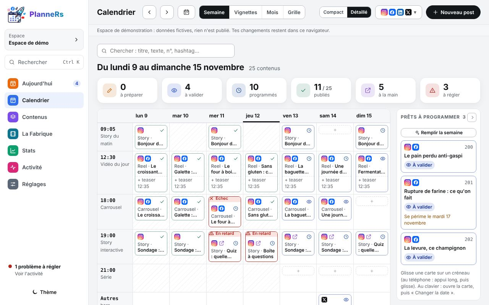
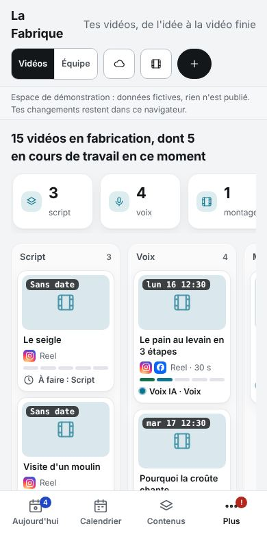
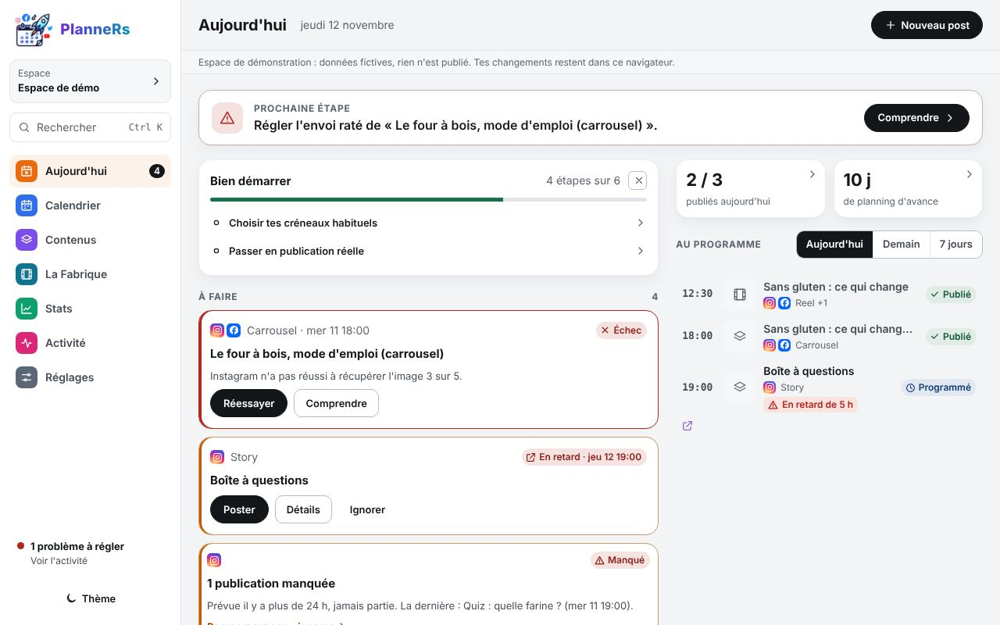
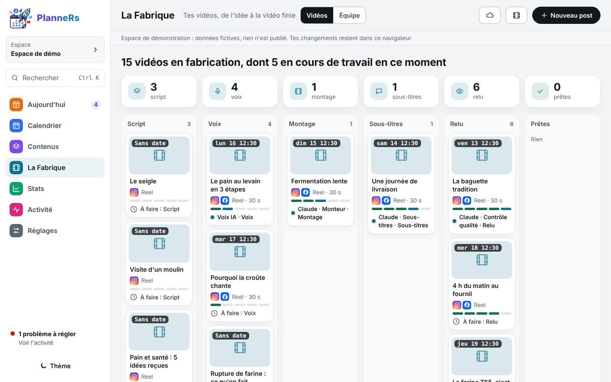
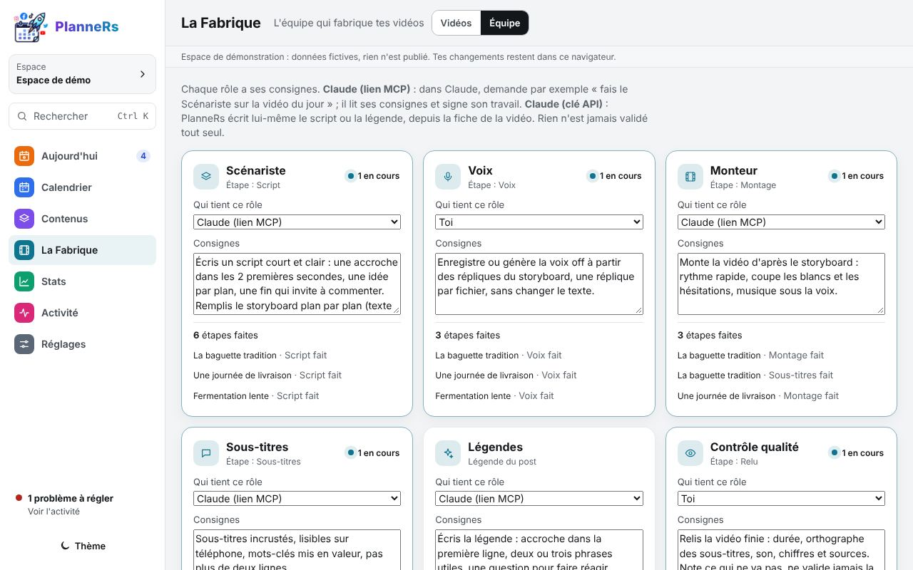
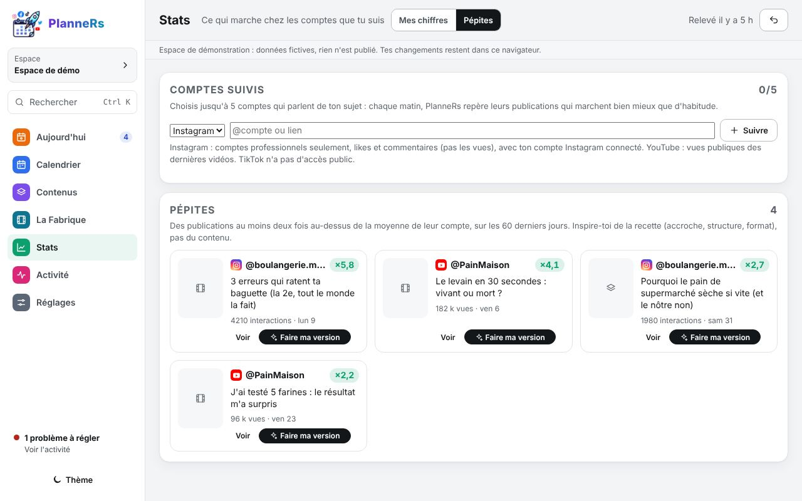
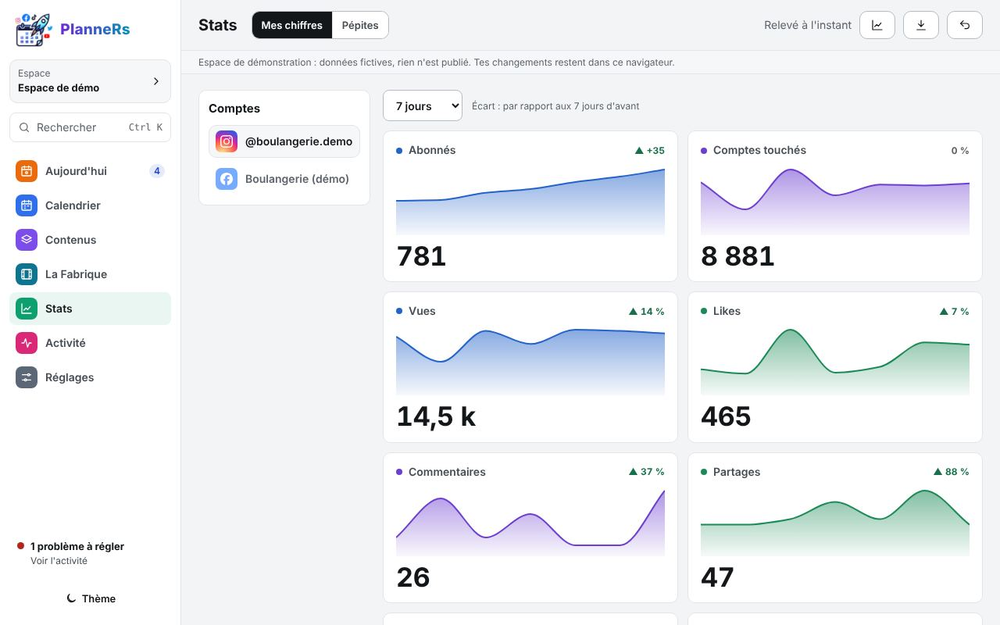

De l'idée à la vidéo publiée,
sans rien laisser filer.
PlanneRs planifie tes publications, suit la fabrication de chaque vidéo avec une équipe d'agents IA, repère ce qui marche chez les comptes que tu suis, puis publie à l'heure. Seulement quand tu as validé.


Une semaine claire, créneau par créneau
Tes habitudes de publication deviennent des créneaux. Tu glisses une idée prête dessus, tu relis, tu valides : elle part toute seule à l'heure.
- Semaine, mois, vignettes ou grille du profil Instagram
- Un texte par réseau, adapté par Claude si tu veux
- Contrôles avant envoi : média manquant, trop de hashtags, texte trop long

Chaque vidéo, de l'idée à la vidéo finie
Script, voix, montage, sous-titres, relecture : tu vois où en est chaque Reel et qui y travaille, en direct. Le storyboard plan par plan alerte si la vidéo dépasse la durée voulue.
- Dépose tes vidéos finies d'un glisser-déposer
- Couper une vidéo : blancs et « euh » retirés, shorts et sous-titres, calculés sur ton ordinateurStudio
- La vidéo finie se regarde ici avant de valider

Une équipe d'agents IA, avec tes consignes
Scénariste, voix, monteur, sous-titres, légendes, contrôle qualité : chaque rôle a ses consignes, écrites à ta façon. Tu choisis qui le tient.
- Claude par le lien MCP : il lit ses consignes et signe son travail
- Ou la clé API : PlanneRs écrit lui-même le script et la légende
- Ou toi : les rôles qui comptent restent entre tes mains

Ce qui marche chez les autres, chaque matin
Suis jusqu'à 5 comptes Instagram ou YouTube. PlanneRs repère leurs publications au moins deux fois au-dessus de leur moyenne.
- « Faire ma version » : une idée inspirée de la recette, dans ton ton
- Pourquoi ça marche, ta version, et ce qui ferait copie
- On reprend une recette, jamais le contenu d'un autre

Ce qui marche chez toi
Abonnés, vues, portée, likes, partages : relevés chaque matin, comparés à la période d'avant. Les posts à republier et les hashtags qui portent remontent tout seuls.
